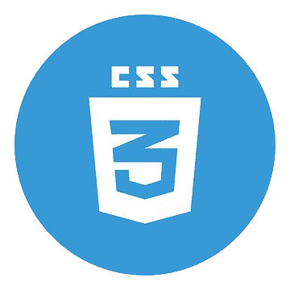

Hi! Its me
Ahmad Safi
Ahmad Safi
I'm Passionate
Work Experience

Web Developer (2024 to 2025)
As a web developer, I have extensive experience building dynamic, user-friendly websites using
HTML, CSS, JavaScript, and various frameworks. I specialize in creating responsive designs,
optimizing performance, and ensuring seamless user experiences across devices and platforms.

HTML Developer
(2024 to 2025)
(2024 to 2025)
With strong expertise in HTML development, I focus on building well-structured, semantic web
pages. I ensure cross-browser compatibility, optimize performance, and prioritize accessibility.
My experience includes integrating HTML with CSS and JavaScript to create responsive and
user-friendly websites.

JS Developer
(2024 to 2025)
(2024 to 2025)
As a JavaScript developer, I have hands-on experience building dynamic, interactive web
applications. Proficient in ES6+, I specialize in front-end frameworks like React and Vue, and
backend technologies like Node.js, ensuring smooth, high-performance user experiences across
platforms.

Freelancer
(2024 to 2025)
(2024 to 2025)
As a C# developer, I have extensive experience building robust applications using .NET
frameworks. I specialize in object-oriented programming, database integration, and developing
scalable solutions, ensuring high performance, reliability, and efficient code management for
various enterprise-level projects.

Video Editer
(2024 to 2025)
(2024 to 2025)
As a Bootstrap developer, I have extensive experience creating responsive, mobile-first web
designs using the Bootstrap framework. I specialize in building visually appealing,
user-friendly websites, optimizing layouts, and ensuring cross-browser compatibility, all while
maintaining fast load times and accessibility.